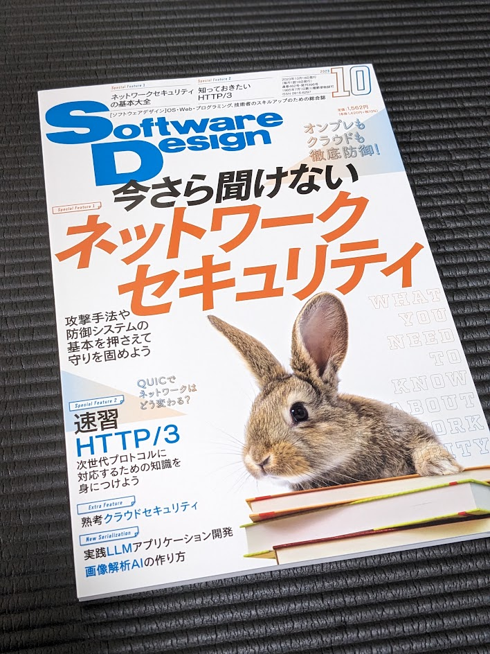

Software Design 10 月号に HTTP/3 の記事を寄稿しました
Software Design 2023 年 10 月号
Software Design 2023 年 10 月号の HTTP/3 の特集の第一章に寄稿する機会を頂きました。¶
https://gihyo.jp/magazine/SD/archive/2023/202310¶
第一章の内容は、HTTP の歴史と HTTP/3 の特徴についてまとめたものになっています。 今回、執筆にあたって、調べれば調べるほど HTTP についてまとめたいことが湧いてきてしまって、 前回の記事で紹介した『Weaving The Web』を読んだり、インターネットの資料を読み漁ったりしました。¶
手前味噌ではありますが、短いページに HTTP の歴史と HTTP/3 の特徴を詰め込むことができたのではと思っています。¶
また、第二章、第三章の HTTP/3 の記事も面白く、 HTTP/3 について知るのにとてもよい記事だと思います。 まだ読まれてない方はぜひ見てみてください。¶
執筆を通して
今回、執筆は初めての経験で調査と執筆、校正などに一ヶ月かかったのですが、本当に大変でした。 間違ったことを書いても修正ができないというプレッシャーが強かったです。 一方で、読者に読んでもらって、「そうなんだ」と思ってもらえたらと考えるととても気分が高揚しました。 執筆の大変さと面白さを同時に感じた経験でした。¶
執筆の期間の間、技術評論社の編集の方に文章を直してもらう経験をしたのですが、これもとても良い経験でした。 この経験を通してブログの記事の文章も、もっと読みやすいように気をつけようと思う機会になりました。¶
執筆小噺
実は、HTTP のレスポンス例に記載している Date はブラウザのリリースに関連する日付にしました。もしも気づいた人がいたらすごいです。¶
おわりに
今回、HTTP/3 の記事を寄稿した報告と、執筆に関して感じたことを紹介しました。 なにかコメントがあれば、@bokken_ までもらえると嬉しいです。¶
(最近は小ネタが多いので、また技術的なまとめの記事を書いていきたいと思っています。)¶